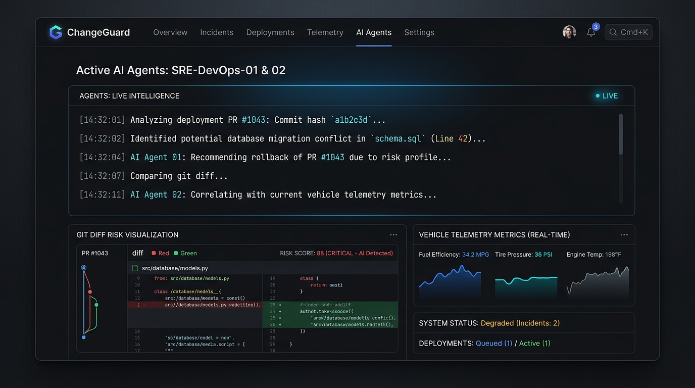

Engineered for developers and SREs to predict blast radius on unified Git diffs before deploy, and autonomously investigate, trace Git blame, and remediate incidents with MCP tools.
opsguard.internal/agent/live
ACTIVE

285Telemetry Req/s
< 45msBaseline p95 Latency
100%Zero-Cloud Local Stack
10 ToolsModel Context Protocol
Plates
Explanations you can run.
Each plate takes one production mechanism from the system and lets you execute it.
> Ready. Inject chaos in Tab 1, or click "Trigger Autonomous Investigation" above.
Root Cause Analysis & Remediation
NO ACTIVE INCIDENT
No active investigation. When degradation occurs, the AI agent will autonomously query MCP tools, correlate logs and Git commits, match historical playbooks, and formulate remediation here.
Incident Identification
P1 INC-20261030
Primary Root Cause
Synchronous blocking latency injected on telemetry request pipeline.
RAG Historical Playbook Match
P1: Latency Degradation in California Fleet94% Match
Rollback Git revision and verify worker thread normalization.
Remediation Action
Proposed Action: Automated GitOps Rollback to revision v2.4.0-stable
Recovery Verified!
Service latency restored to < 50ms, error rate 0.0%, all health checks green.
Plate 04 / Knowledge Base
Historical Incident Post-Mortems
Curated post-mortems indexed into the RAG vector store for instant agent similarity matching.